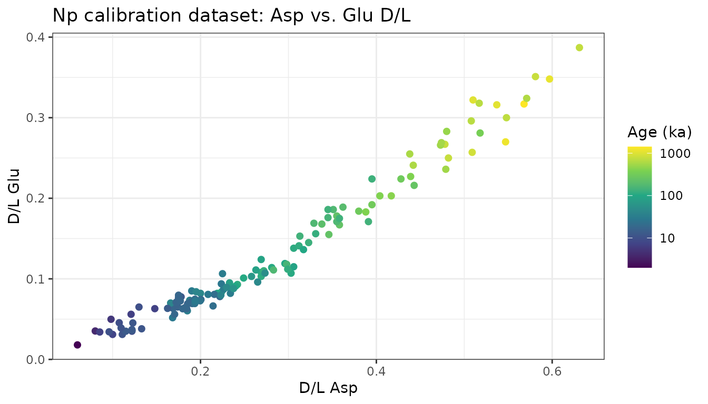
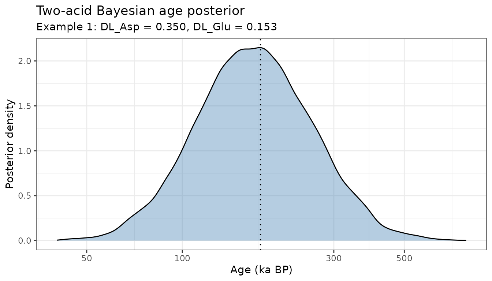
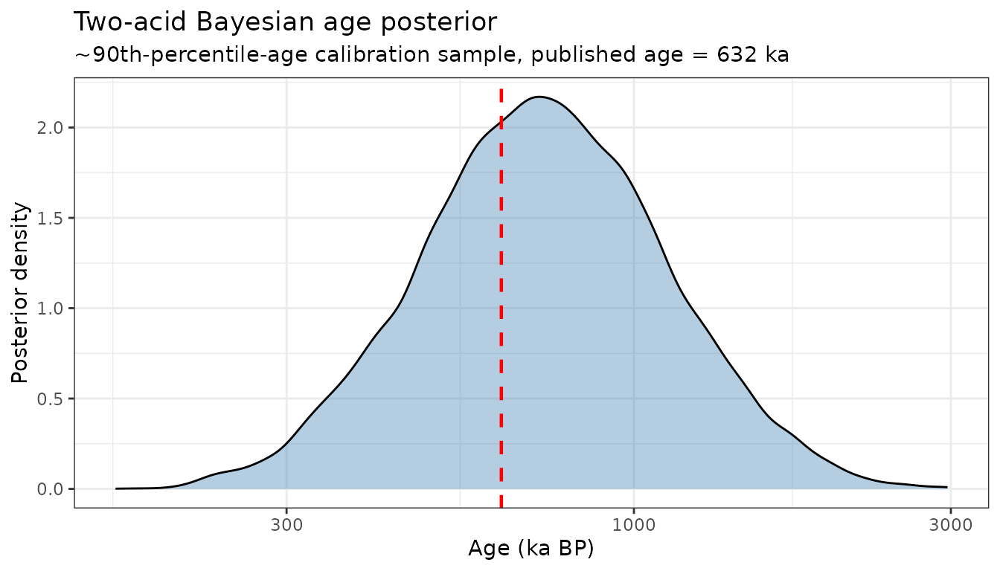

Two-Acid Bayesian Age Inversion (Asp + Glu)
Source:vignettes/two-acid-age-inversion.Rmd
two-acid-age-inversion.RmdOverview
The vignettes so far treat AAR as a
paleothermometer: kinetics are calibrated from lab
heating experiments and a known-temperature core
(vignette("kinetics-fitting")), then an unknown temperature
history is inferred from a single amino acid’s downcore D/L profile
(vignette("temperature-reconstruction")).
This vignette turns the same machinery around and uses it for AAR geochronology: dating a fossil sample from its D/L ratio, given an independently-dated calibration set. The approach follows an in-prep calibration study of Neogloboquadrina pachyderma (Np), the dominant planktonic foraminifer in polar and subpolar oceans, which is dated using aspartic acid (Asp) and glutamic acid (Glu) simultaneously (Kaufman et al., in prep.). Bottom water at these high-latitude sites stays close to freezing across glacial-interglacial cycles, so temperature is treated as approximately constant and age becomes the unknown to solve for – the mirror image of the temperature-reconstruction problem.
Combining two amino acids is valuable because each has its own calibration scatter, and a sample’s true age is more tightly constrained by two partly independent lines of evidence than by either alone. The original study combines Asp and Glu ages by generalized least squares (GLS), weighting each acid’s age estimate by its inverse variance and their covariance. That approach works, but the raw GLS weight can go negative when the two acids are highly correlated, requiring an ad hoc “softplus” floor to keep both weights positive.
Here we build a two-stage Bayesian MCMC model that
reuses this package’s existing run_mcmc() sampler and
plotting utilities:
- Stage 1 fits Bayesian TDK (Asp) and SPK (Glu) calibration curves jointly, with a correlated bivariate-normal residual structure, to a real 128-sample Np calibration dataset.
- Stage 2 infers a full posterior distribution for a new sample’s age from its Asp and Glu D/L, using the two acids’ evidence jointly through that same correlated likelihood.
Because this is an ordinary Bayesian posterior rather than an algebraic GLS combination, the two acids combine coherently for any value of the correlation – no floor or smoothing constant is needed – and the model can just as easily incorporate a genuine prior (e.g. a stratigraphic age range) if one is available.
Calibration models
Following Allen et al. (2013), Asp D/L-age data are best described by time-dependent kinetics (TDK), and Glu by simple power-law kinetics (SPK):
predict_age_asp() / predict_age_glu()
implement these forward (D/L
age) transforms; predict_DL_asp() /
predict_DL_glu() are their inverses.
The calibration dataset
The package includes the 128-sample Np calibration dataset (Arctic Ocean, Nordic Seas, North Atlantic, and Southern Ocean cores; ages 2 ka to 1.4 Myr), compiled for the in-prep calibration study.
np_path <- system.file("extdata", "np_calibration.csv", package = "AARP")
np <- read.csv(np_path)
cal_data <- data.frame(age_ka = np$age_ka, DL_Asp = np$DL_Asp, DL_Glu = np$DL_Glu)
nrow(cal_data)
#> [1] 128
head(cal_data)
#> age_ka DL_Asp DL_Glu
#> 1 7 0.148 0.063
#> 2 115 0.242 0.093
#> 3 401 0.404 0.203
#> 4 602 0.442 0.241
#> 5 785 0.478 0.267
#> 6 1020 0.510 0.322
ggplot(np, aes(x = DL_Asp, y = DL_Glu, colour = age_ka)) +
geom_point(size = 1.8) +
scale_colour_viridis_c(trans = "log10", name = "Age (ka)") +
labs(x = "D/L Asp", y = "D/L Glu",
title = "Np calibration dataset: Asp vs. Glu D/L") +
theme_bw()
Stage 1: Bayesian calibration fit
Both acids are measured on the same dated samples, so their residuals
from the mean age-D/L trend are expected to covary: a sample that
racemizes a bit faster than average tends to do so in both amino acids.
log_lik_age_calibration() models this directly with a
bivariate normal likelihood on the two acids’ log-age residuals at each
calibration sample, sharing a single correlation parameter
rho.
Priors on the six calibration parameters plus rho are
weakly informative, centred on typical literature values but wide enough
that ~128 samples dominate the posterior:
| Parameter | Prior |
|---|---|
| log(a_Asp) | Normal(log(3000), 3) |
| e_Asp | Normal(2.5, 2) |
| log(sigma_Asp) | Normal(log(0.4), 1.5) |
| log(a_Glu) | Normal(log(9000), 3) |
| e_Glu | Normal(2.2, 2) |
| log(sigma_Glu) | Normal(log(0.4), 1.5) |
| z_rho | Normal(0, 1) |
init_cal <- c(log_a_Asp = log(3000), e_Asp = 2.5, log_sigma_Asp = log(0.4),
log_a_Glu = log(9000), e_Glu = 2.2, log_sigma_Glu = log(0.4),
z_rho = 0)
prop_cal <- c(log_a_Asp = 0.02, e_Asp = 0.015, log_sigma_Asp = 0.03,
log_a_Glu = 0.02, e_Glu = 0.015, log_sigma_Glu = 0.03,
z_rho = 0.06)
set.seed(42)
mcmc_cal <- run_mcmc(log_posterior_age_calibration,
init = init_cal,
n_iter = 40000,
proposal_sd = prop_cal,
calibration_data = cal_data)
cat("Acceptance rate:", round(mcmc_cal$acceptance_rate * 100, 1), "%\n")
#> Acceptance rate: 27.5 %Posterior calibration constants
calib_params <- summarize_calibration(mcmc_cal, burnin = 10000)
calib_params
#> $a_Asp
#> [1] 2170.766
#>
#> $e_Asp
#> [1] 2.547859
#>
#> $sigma_Asp
#> [1] 0.4202709
#>
#> $a_Glu
#> [1] 6636.33
#>
#> $e_Glu
#> [1] 2.034293
#>
#> $sigma_Glu
#> [1] 0.4822469
#>
#> $rho
#> [1] 0.8564523For comparison, the study’s independently fitted OLS constants are , , , , . The joint Bayesian fit recovers a similar correlation and comparable curve shapes; the scale/exponent pair differs somewhat because the joint likelihood optimizes both curves’ fit and their shared residual structure simultaneously, rather than fitting each acid’s OLS regression independently.
Stage 2: two-acid age inversion
With the calibration posterior summarised, we can now infer a full
age posterior for any new sample given its Asp and Glu D/L.
invert_two_acid_age() runs a one-parameter MCMC chain on
,
using log_lik_two_acid_age() to jointly evaluate both
acids’ evidence through the shared correlated residual structure fit in
Stage 1, and a weak bounded prior (log_prior_age()) that
only rules out ages far outside the calibration range – easy to tighten
if independent age information (e.g. stratigraphic order) is
available.
Validation against the published GLS calculator
Two worked examples from the study’s spreadsheet calculator provide a direct check: their GLS-combined ages and 66% (“likely”) prediction intervals can be compared against our Bayesian posterior for the same D/L inputs.
examples <- list(
"Example 1" = list(DL_Asp = 0.350, DL_Glu = 0.153,
gls_median = 176.25, gls_lo66 = 119.47, gls_hi66 = 260.03),
"Example 2" = list(DL_Asp = 0.272, DL_Glu = 0.110,
gls_median = 82.59, gls_lo66 = 49.97, gls_hi66 = 136.52)
)
set.seed(1)
mcmc_examples <- lapply(examples, function(ex) {
invert_two_acid_age(DL_Asp_obs = ex$DL_Asp, DL_Glu_obs = ex$DL_Glu,
calib_params = calib_params, n_iter = 30000)
})
comparison <- do.call(rbind, lapply(names(examples), function(nm) {
post <- summarize_age_posterior(mcmc_examples[[nm]], burnin = 5000)
data.frame(sample = nm,
bayes_median = post$median_ka,
bayes_lo66 = post$lo66_ka,
bayes_hi66 = post$hi66_ka,
gls_median = examples[[nm]]$gls_median,
gls_lo66 = examples[[nm]]$gls_lo66,
gls_hi66 = examples[[nm]]$gls_hi66)
}))
knitr::kable(comparison, digits = 1)| sample | bayes_median | bayes_lo66 | bayes_hi66 | gls_median | gls_lo66 | gls_hi66 |
|---|---|---|---|---|---|---|
| Example 1 | 167.8 | 112.8 | 252.0 | 176.2 | 119.5 | 260.0 |
| Example 2 | 84.3 | 56.9 | 125.4 | 82.6 | 50.0 | 136.5 |
The Bayesian posterior medians and 66% credible intervals closely track the spreadsheet’s GLS point estimates and prediction intervals, confirming the joint likelihood is doing the same job as the GLS combination – while avoiding its softplus weight-flooring step entirely.
plot_age_posterior(mcmc_examples[["Example 1"]], burnin = 5000,
compare_ages_ka = c("GLS combined" = 176.25)) +
labs(subtitle = "Example 1: DL_Asp = 0.350, DL_Glu = 0.153")
Recovering known ages from the calibration set
As a further check, we invert the age of three calibration samples near the 10th, 50th, and 90th percentiles of the dataset’s age distribution, using their measured D/L but not their published age, and compare the recovered posterior to the known value. (The very oldest samples are avoided here: as in the original study’s own leave-one-out cross-validation, the calibration is least precise – and mildly biased young – at its oldest extreme, where calibration samples are sparsest.)
age_quantiles <- stats::quantile(np$age_ka, c(0.1, 0.5, 0.9))
check_idx <- sapply(age_quantiles, function(q) which.min(abs(np$age_ka - q)))
set.seed(2)
mcmc_known <- lapply(check_idx, function(i) {
invert_two_acid_age(DL_Asp_obs = np$DL_Asp[i], DL_Glu_obs = np$DL_Glu[i],
calib_params = calib_params, n_iter = 30000)
})
known_summary <- do.call(rbind, lapply(seq_along(check_idx), function(k) {
i <- check_idx[k]
post <- summarize_age_posterior(mcmc_known[[k]], burnin = 5000)
data.frame(UAL = np$UAL[i], published_age_ka = np$age_ka[i],
posterior_median_ka = post$median_ka,
lo66_ka = post$lo66_ka, hi66_ka = post$hi66_ka)
}))
knitr::kable(known_summary, digits = 1)| UAL | published_age_ka | posterior_median_ka | lo66_ka | hi66_ka |
|---|---|---|---|---|
| 7440 | 11.6 | 12.8 | 8.6 | 19.0 |
| 8188 | 88.8 | 115.0 | 77.0 | 171.2 |
| 8194 | 631.6 | 727.3 | 487.2 | 1088.5 |
plot_age_posterior(mcmc_known[[3]], burnin = 5000,
true_age_ka = np$age_ka[check_idx[3]]) +
labs(subtitle = paste0("~90th-percentile-age calibration sample, published age = ",
round(np$age_ka[check_idx[3]]), " ka"))
The recovered posteriors bracket the published ages within their credible intervals, as expected for samples that were themselves part of the calibration fit.
Why Bayesian?
The GLS approach implemented in the spreadsheet calculator is fast and transparent, and this vignette confirms our Bayesian model reproduces it closely. The Bayesian formulation offers a few things the GLS calculator does not, at the cost of running an MCMC chain instead of evaluating a formula:
-
No ad hoc weight flooring. When Asp and Glu are
highly correlated, the GLS weight on the less-precise acid can go
negative, requiring a smoothed floor (
s,win the spreadsheet) to keep the combination well-behaved. The joint likelihood here never produces a negative “weight” because there isn’t one – both acids simply contribute evidence to one posterior. -
Priors.
log_prior_age()is an ordinary Bayesian prior. If a stratigraphic constraint, a minimum/maximum age, or another proxy’s age estimate is available for a sample, it can be folded in directly by tighteningrange_kaor swapping in an informative density, sharpening the posterior beyond what the D/L data alone provide. - Full posterior, not just symmetric log-normal bands. The three “more likely than not / likely / very likely” IPCC-style bands in the spreadsheet are read off an assumed log-normal shape; here they are genuine empirical quantiles of the sampled posterior, which can depart from log-normality when the prior’s age bound becomes informative.
-
Reuses the same MCMC infrastructure as the
temperature-reconstruction workflow (
run_mcmc(),plot_mcmc_chains()), so the two problems – inferring temperature from a single acid, and inferring age from two – are solved with one consistent Bayesian toolkit.
One simplification relative to the full study: the likelihood here
uses only the calibration-scale residual variance
(sigma_Asp, sigma_Glu), not the additional
analytical-measurement-uncertainty term the study adds via each sample’s
replicate SE. The study finds that term contributes roughly 1% of total
variance for typical replicate counts, so this simplification has little
practical effect, but a per-sample measurement-uncertainty term could be
added to log_lik_two_acid_age() if replicate SEs are known
to be unusually large.